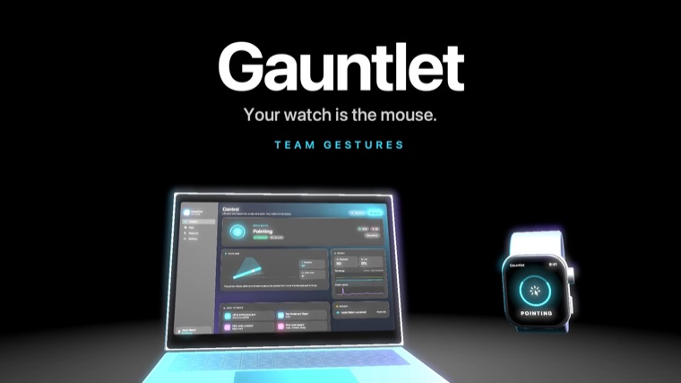
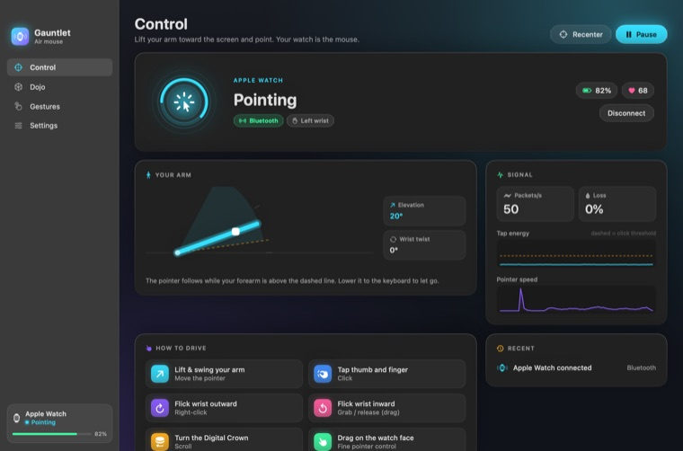
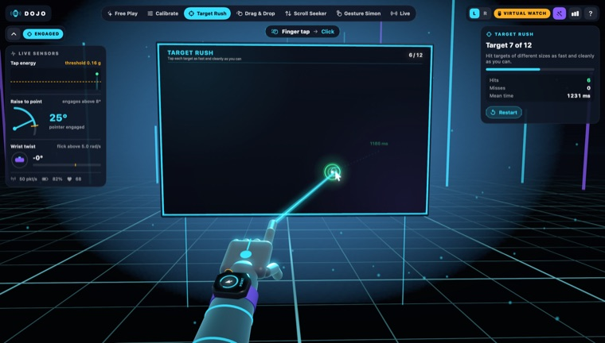

“We turn the watch on your wrist into the mouse for your Mac.”
When all four of us can say this without thinking, we are ready to start.
Who owns what
Ayush Build crew
Hardware + live demo
Owns the Mac, the watch and calibration. Wears the watch on stage.
Dev Build crew
Reliability + safety net
Owns testing, the real numbers and Plan B. Mission control on stage.
Ishita Show crew
Story + script
Owns the story, the words and the timing of every line.
Thanvi Show crew
Slides + visuals
Owns the deck, the pictures and what is on each screen.
This split is a suggestion. Swap if you like, and say so on Discord.
Key times
Fill these in together at the first sync.
Hacking ends
Submission due
Our stage slot
Slot length (minutes)
Judging criteria
Two screens: separate or mirrored?
Discord HQ
announcementsdecisions and times only
buildAyush + Dev
showIshita + Thanvi
stage-dayfiles, checklists, last minute
war-roomvoice, for every sync
DONEwatch connects 5 times out of 5
NEXTcalibrate at the venue
STUCKneed an HDMI adapter
Sync in voice at every road stop: 10 minutes.
Stuck for 20 minutes? Say it. Do not sit on it.
Pin this PDF, the deck link, the film, the key times.
Gauntlet · team roadmap2 / 9
The plan · everyone
The road to the stage
Five stops. Nobody moves on until the “done when” is true.
Stop
Build crew
Show crew
Done when
1Sync
Everyone reads this roadmap, then one 10-minute call to agree the times, the roles and the one sentence.
Key times are filled in.
2Lock
Make the connection and the click work every single time.
Write the one sentence and the 10-slide storyboard.
5 clean connects in a row. Storyboard agreed.
3Build the show
Real numbers, a real demo clip, Plan B ready to go.
Deck version 1 and script version 1, start to finish.
We can run the whole show once, even badly.
4Rehearse
All four, standing, with both screens: three timed runs and one disaster drill.
Two runs in a row finish on time.
5Showtime
Follow the stage-day checklist on page 9. Breathe. Deliver.
Applause.
How to spend the time that is left
Lock · 35%
Build the show · 30%
Rehearse · 25%
Spare
Already in the bag

The film · 66 sshowcase / Gauntlet-TeamGestures.mp4

The Mac appApplications / Gauntlet

The 3D Dojoinside the app: train and calibrate
300+
Automated checksall passing, so the logic is proven
Gauntlet · team roadmap3 / 9
Build crew · Ayush + Dev
Make it unbreakable
Judges forgive a missing feature. They do not forgive a demo that will not start.
1
Connect every time
Do first
Fix “Mac keeps searching”. Quit both apps, open the Mac app, then the watch app.AD
Pass the test: 5 clean connects in a row.D
Reinstall the watch app the day before. Free signing lasts 7 days (first install: Nov 11).A
Run only the copy in Applications, with Bluetooth and Accessibility switched on.A
2
Tune it to Ayush
Run Dojo › Calibrate at the venue, standing up.A
Pick the demo click: finger tap, wrist flick or watch tap. Keep the one that works 20 times out of 20.A
Set Speed so one easy arm sweep crosses the screen.A
Make the pointer big: System Settings › Accessibility › Display › Pointer size.D
3
Get real numbers
Play Target Rush 3 times. Write down hits, average time and throughput.D
Screenshot the Control page showing about 50 packets a second and 0% loss.D
Hand the show crew 3 numbers and 5 screenshots.D
4
Build the safety net
Film a real 60-second demo on a phone: wrist and screen in one shot.D
Plan B: the Dojo’s virtual watch, open and ready.D
Plan C: the film saved offline on both laptops.D
5
Pack the stage kit
MacBook, charger, and a USB-C to HDMI adapter (the Air has no HDMI port).A
iPhone and cable for an emergency reinstall. Watch charger.A
Mac: mirror the display, Do Not Disturb on, never sleep.D
6
Submit, and be honest
Submit the project, README and video before the deadline.D
Check the rules on AI tools. If asked, say it plainly: we directed the build with Claude Code and tested on real hardware.AD
How it works · all four of us should be able to draw this
WatchFeels your wrist move, 100 times a second.
›
Bluetooth50 updates a second, straight to the Mac.
›
EngineTurns motion into pointing and taps into clicks.
›
CursorOrdinary Mac mouse events. Every app just works.
Gauntlet · team roadmap4 / 9
Show crew · Ishita + Thanvi
Make them lean forward
The product is the magic. Your job is to make the room feel it in the first 20 seconds.
1
Find the story
I
Lock the one sentence. Say it at the start and again at the end.
Four beats: the villain, the reveal, the proof, the dream.
Ask the organisers: slot length, judging criteria, how the two screens work.
2
Build the deck
T
10 slides, no more. Black background, white words.
One idea per slide. Six words or fewer.
Use the film frames and app screenshots in the showcase folder.
Hide backup slides after the last one: how it works, security, limits.
3
Write the words
I
A script with a time and a name next to every line.
Agree the demo cue words with Ayush: Point. Tap. Flick. Scroll. Grab.
Write the rescue lines for Plan B and Plan C (page 8).
4
Rehearse
IT
Three full runs with a timer, standing, with both screens.
One disaster drill: Dev turns Bluetooth off in the middle.
Film one run on a phone. Watch it together. Cut 20%.
The 10 slides · a starting storyboard
1Your hand already knows how to point.
2The mouse. Since the 1960s.
3Point. Click. Scroll.
4It is already on your wrist.
5Gauntlet
6Live demoPoint. Tap. Flick. Scroll. Grab.
7Watch › Bluetooth › Engine › Cursor
8Train in 3D.
9For hands that are busy. Or hurting.
10Gauntlet. Your watch is the mouse.
Slide 6 shows one word at a time while Ayush does that gesture on the other screen. Then end on slide 10 and say “one more thing” (page 6).
What you can take from the build crew
The 66-second film and its closing frame as a poster
Screenshots of the app and the 3D Dojo
Three real numbers from the Dojo, once Dev has measured them
A real phone clip of the demo, for Plan C
Gauntlet · team roadmap5 / 9
The style · everyone
Present it like a keynote
Steve Jobs made product launches feel like magic with a few simple habits. Borrow them.
01
One idea per slideIf it needs a second sentence, it needs a second slide.
02
The rule of threePoint. Click. Scroll. Three things are easy to remember.
03
Give them a villainThe mouse: a 1960s idea that still ties your hand to the desk.
04
Show, do not tellThe live Mac is the star. The slides only set it up.
05
Pause before the revealTwo seconds of silence. Then: “It is already on your wrist.”
06
Rehearse until it is boringJobs rehearsed for days. We get three runs. Use all of them.
One more thing…End with a surprise that is already built: Ayush’s live heart rate on the big screen. The watch sends it to the Mac’s Control page. “It knows I am nervous.”
The stage · two screens, one story
Screen 1 tells the story. Screen 2 proves it, live.
Ask the AV desk first: can the two screens show two different laptops?
If they can only mirror: run the slides on Ayush’s Mac too. Dev switches between slides and desktop.
Dev sits at the Mac with a hand near the trackpad, ready to rescue.
Gauntlet · team roadmap6 / 9
The show · everyone
Five minutes, second by second
A starting script for a five-minute slot. Swap names if you swap roles.
Time
Who
Screen 1 · story
Screen 2 · proof
The moment
0:00
Ishita
Your hand already knows how to point.
Mac desktop. Pointer still.
Hold up an empty hand. Then name the villain: the mouse.
0:40
Thanvi
Point. Click. Scroll.It is already on your wrist.
Still the desktop.
Pause for two seconds before the reveal.
1:00
Thanvi + Ayush
Point.Tap.Flick.Scroll.Grab.
LIVEAyush drives the Mac with nothing in hand.
Thanvi says the word. Ayush does it.
2:40
Dev
Watch › Bluetooth › Engine › Cursor
LIVEControl page, gauges moving.
Three numbers: 100 Hz, 50 updates a second, a 6-digit pairing code.
3:20
Thanvi + Ayush
Train in 3D.
LIVEDojo: 10 seconds of Target Rush.
Ayush hits targets. Read out the score.
3:50
Ishita
For hands that are busy. Or hurting.
Mac at rest.
Who it is for, in one breath.
4:20
Ishita
Gauntlet. Your watch is the mouse.
Control page.
Say the one sentence. Stop. Let it land.
4:35
Ayush
One more thing…
LIVEControl page: the heart rate.
“It knows I am nervous.” Read the number. Thank you.
Ayush’s demo, move by move
Lift the forearm. The pointer wakes up.
Sweep across the whole screen and back.
Tap: open an app from the Dock.
Flick out: the right-click menu appears.
Turn the crown: scroll a long page.
Flick in: grab a window, move it, flick in to drop.
Lower the arm. The pointer rests. Smile.
Set up before: big Dock icons, one long web page, one window, big pointer.
Only three minutes?
Cut “how it works” to 20 seconds.
Skip the Dojo.
Keep the live demo and the heart rate.
Three rules for the demo
Ayush never talks and points at once.
Thanvi waits for the gesture to finish.
If one gesture fails, move on. Do not retry.
Gauntlet · team roadmap7 / 9
Just in case · everyone
If something breaks, nobody panics
Decide now what we do, so on stage it looks planned. Dev says “switch”. The speaker keeps talking.
A
Live watch demothe real thing
GoEverything is connected and Packets/s reads about 50.
B
Dojo with the virtual watchif the watch is not back in 10 seconds
Say“Bluetooth is busy in this room. Here is the same engine in our training mode.”
C
Our real demo clip, then the filmif the Mac itself misbehaves
Say“Here it is from this morning, on this exact watch.”
D
Screenshots in the deckif there is no video or sound
Say“Come and try it on your own wrist at our table.”
Questions the judges will ask
What is the latency?ASensing runs at 100 Hz and a packet lands every 20 ms. We have not measured end to end yet.
How do you detect a finger tap?DA short, sharp spike on the accelerometer, calibrated to each person.
Can someone hijack my cursor?DOnly a paired watch gets in: a key exchange plus a 6-digit code. The link is authenticated, not encrypted.
Why Bluetooth and not Wi-Fi?AIt is a direct link from watch to Mac. No phone and no router in between.
Who is this for?IPeople with sore or limited hands, presenters, and anyone whose hands are busy.
What already exists?TResearch this before the pitch. Apple’s own wrist gestures control the watch, not the Mac.
Did you use AI to build it?AYes. We designed and directed it, built it with Claude Code, and tested it on real hardware.
What is next?TMeasure latency and battery, encrypt the link, a smarter tap detector, more platforms.
Numbers we can say
100 Hz motion sensing
50 updates a second over Bluetooth
5 gestures, 6-digit pairing code
300+ automated checks, all passing
Never say
A latency, battery or accuracy number we did not measure
“Encrypted” (it is authenticated)
“App Store ready”
“Tested with users”
Gauntlet · team roadmap8 / 9
Stage day · everyone
The last hour
Three short lists. Tick them out loud, together.
T minus60 minutes
Mac plugged in. Watch above 80%. Low Power Mode off.
Open Gauntlet on the Mac, then on the watch. See “Ready”.
Calibrate once, standing where Ayush will stand.
Plug into the real projector. Mirror the display.
Deck, film and demo clip open, with sound tested.
T minus10 minutes
Packets/s is about 50. Loss is near 0%.
Do Not Disturb on. Every other app closed.
Earbuds and other Bluetooth gadgets off.
Plan B window open behind the demo.
Water. One slow breath.
GoOn stage
Ayush stays within 3 metres of the Mac.
Arm down means the pointer rests. Use it.
If it breaks, Dev says “switch”.
Slow down. Pause before the reveal.
Smile. You built this.
Who stands where
Ishita centre stage, between the screens: opens and closes.
Thanvi beside Screen 1: runs the slides, calls the gestures.
Ayush near Screen 2, facing the room: the hand.
Dev seated at the Mac: mission control.
Afterwards
Thank the judges. Offer them the watch to try.
Write every question they asked in #stage-day.
Post the deck, the clip and the film in #announcements.
Put the watch on charge. Then celebrate.
See you on stage.
Gauntlet · Your watch is the mouse · Team Gestures